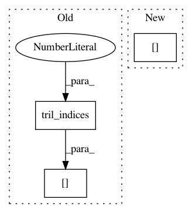

314c5bd86e593b5e9720bc7fd943a86866358c2a,gpflow/transforms.py,LowerTriangular,backward,#LowerTriangular#Any#,303
Before Change
N = int((y.size / self.num_matrices) ** 0.5)
y = np.reshape(y, (N, N, self.num_matrices))
return y[np.tril_indices(len(y), 0)].T.flatten()
def forward_tensor(self, x):
fwd = tf.transpose(vec_to_tri(tf.reshape(x, (self.num_matrices, -1)), self.N), [1, 2, 0])
After Change
N = int(np.sqrt(y.size / self.num_matrices))
reshaped = np.reshape(y, (N, N, self.num_matrices))
size = len(reshaped)
triangular = reshaped[np.tril_indices(size, 0)].T
return triangular
def forward_tensor(self, x):
In pattern: SUPERPATTERN
Frequency: 3
Non-data size: 3
Instances
Project Name: GPflow/GPflow
Commit Name: 314c5bd86e593b5e9720bc7fd943a86866358c2a
Time: 2017-10-03
Author: art.art.v@gmail.com
File Name: gpflow/transforms.py
Class Name: LowerTriangular
Method Name: backward
Project Name: GPflow/GPflow
Commit Name: 8a801031c5a5f34f5d83319aa99a9e0889bb56a1
Time: 2018-01-02
Author: art.art.v@gmail.com
File Name: gpflow/transforms.py
Class Name: LowerTriangular
Method Name: backward_tensor
Project Name: GPflow/GPflow
Commit Name: 5809cb0b339612434f4f332a91a2cd3e4570c34d
Time: 2018-02-26
Author: james@prowler.io
File Name: gpflow/transforms.py
Class Name: LowerTriangular
Method Name: backward